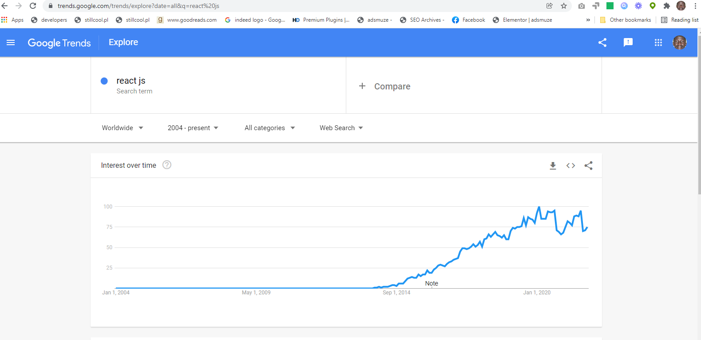
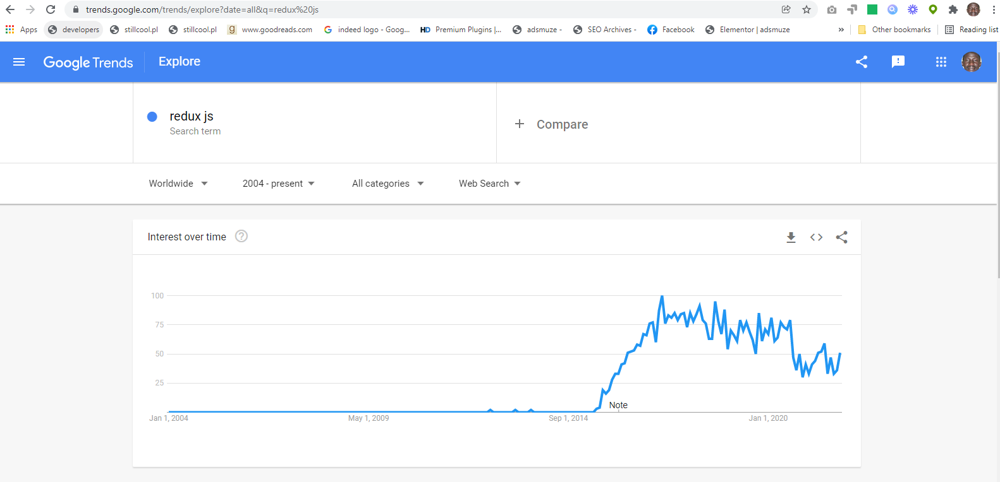
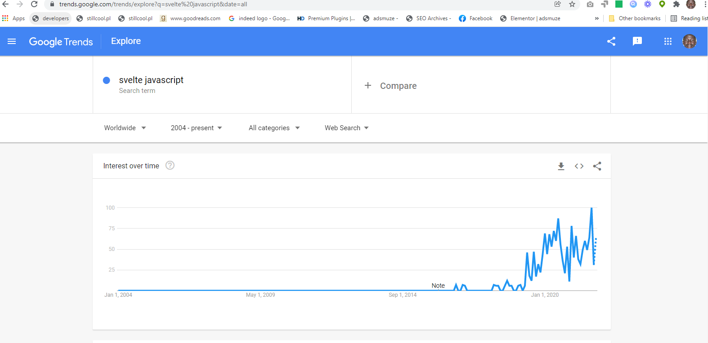

Svelte Has the Same Adoption Curve as React
JavaScript frontend optimization will be a major trend in the jobs of 2022.

Since its beginning in 2012, we have all seen the growth of adoption of React.js a JavaScript framework born inside Facebook for easily building component-driven frontends. Many developers like you and me have dived into learning this frontend framework and using it for the projects in which we were working and like many tech things adoption is often about the influence we use this tech tool because others are using it. Influence is one of the most important criteria for the adoption of an innovation and you could read Everett Rogers's book about the diffusion of innovations (here) if you are in doubt about this. The following Google Trends chart shows how wide the adoption of React.js is until 2012.

Using React component paradigms has highlighted many more important issues to address for building better frontend solutions and many libraries have been built to make React development experience better. State management was one of these concerns and state management solutions like Redux and since version 16.8 React has included states in its component-driven solution. But state management is still a battle that the whole JavaScript community is trying to win and all JS frontend frameworks are trying to come up with built-in state management solutions while others like redux are offering state management-centered solutions. One of these state management-centric solutions is recoil and the following google trends chart shows how state management solutions are interesting JavaScript developers.

But state management only is not the hurdle of frontend developers, the size of the bundled script to be delivered to the client’s browser is a big concern for making the web experience faster but also for allowing both web platform operators and users to save network bandwidth expenses. For achieving this goal of reducing the size of JavaScript files minifiers were not enough and we explored code-splitting which is about delivering to the client only the portions of code that are used for the requested web application context, not all the sources of the used frontend solution. With Minifiers and code splitting we have reduced the size of our JavaScript files.
Seeing this gap in optimization of JavaScript frontend code some JavaScript developers have decided to develop new JavaScript frontend frameworks that are purposefully designed to address this issue of file size optimization that will impact loading time which becomes more and more an important parameter for a web application and studies have already shown the impact of web page loading time on conversion and revenues. Svelte is one of these newly born JavaScript frontend frameworks that are designed to make web experience faster and the level of interest illustrated by the following Google trends charts shows that developers like you and me care about this kind of optimized solution for speed.

But this article is not about going inside the heart and under the hood of svelte and explaining how it works and why it could be better than react but rather shows that there is this trending movement about optimization of Frontend Solutions that every Frontend engineer should care about and frameworks developers are doing so because React developed on purpose Preact for competing in this space of Speed optimized Frontend Frameworks.
Walmart found that for every 1 second improvement in page load time, conversions increased by 2%. source: cloudfare
Like Walmart, when companies and startups will be more aware of the importance of web application loading speed, these kinds of solutions will be more and more in demand and more and more developers like you and me will adopt them because Jobs availability is also an important criterion when it comes to the adoption of new tech innovations and JavaScript frameworks aren’t escaping this adoption rule. There are 470 Svelte JavaScript job offers in indeed (60,441 jobs for React), 270 Svelte jobs in LinkedIn (+140K jobs for React) and we could expect a growing number of Svelte jobs in the near and far future, the more this framework is being understood and adopted.
I am currently collecting the evolution of Svelte JS (sveltekit) number of jobs number offers over time and this data collection will be an article that will be published in this publication experiment that I Called Metrics of jobs because I am guessing that this framework will be an important framework for 2022 if you are looking for a job and this survey from StackOverflow of 2021 shows that it is the most loved framework.
PS: Again I am not advocating for the adoption of Svelte JS but rather showing the importance of speed for web applications and that’s what I have been doing since 2019 with all these 10 articles about Core web Vitals and this Google update.
More content at plainenglish.io. Sign up for our free weekly newsletter. Get exclusive access to writing opportunities and advice in our community Discord.